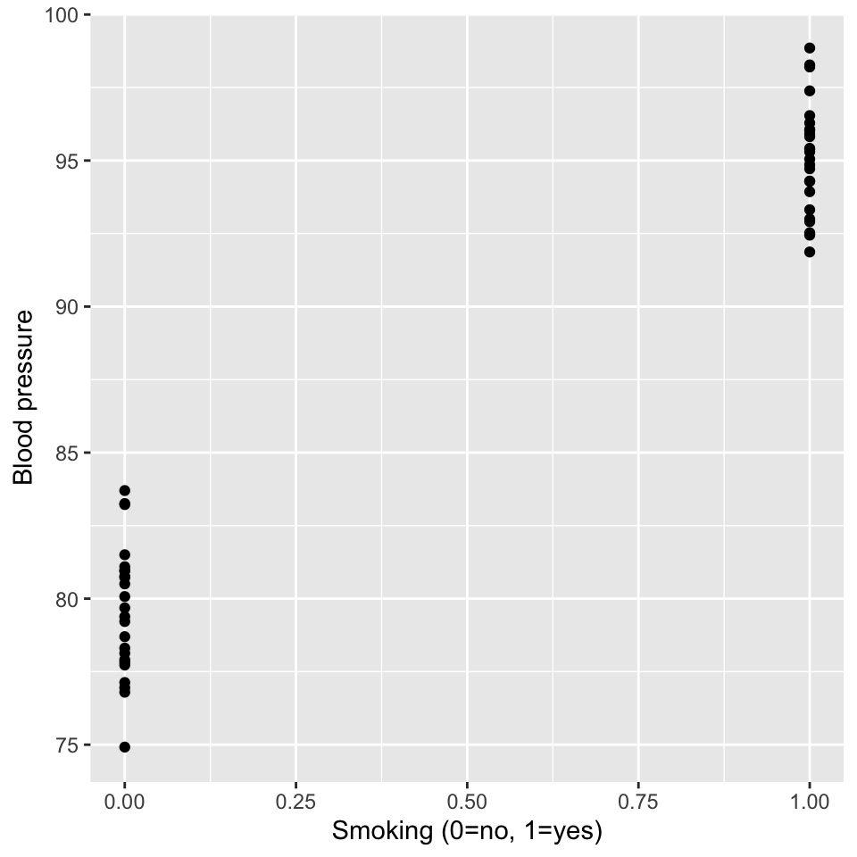
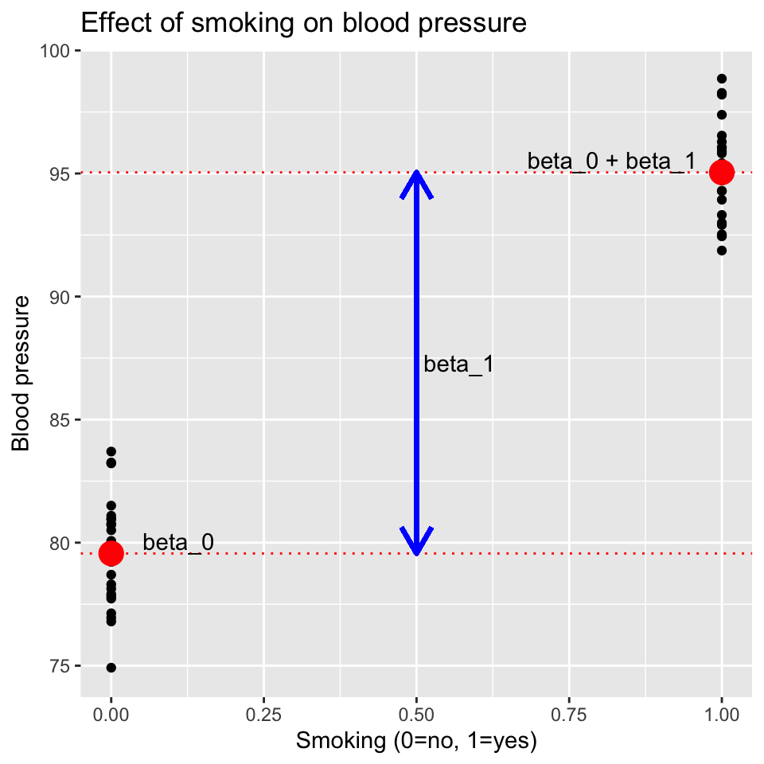
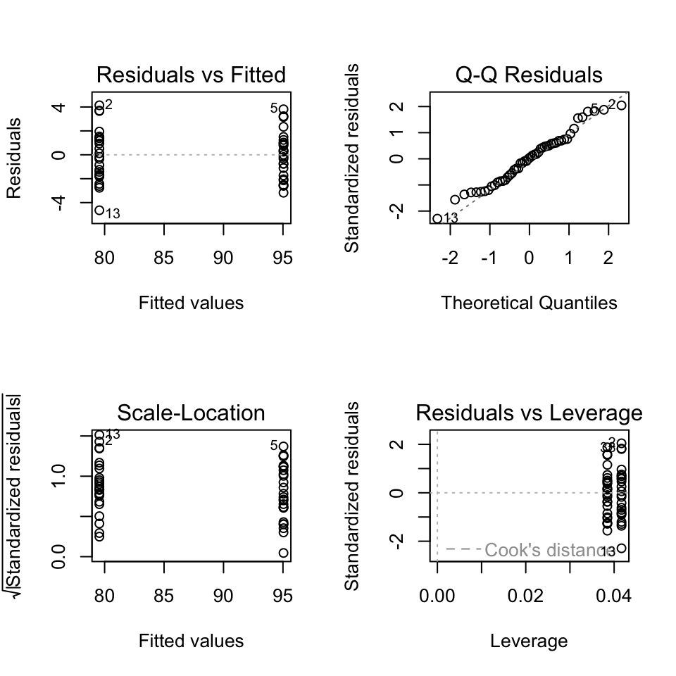
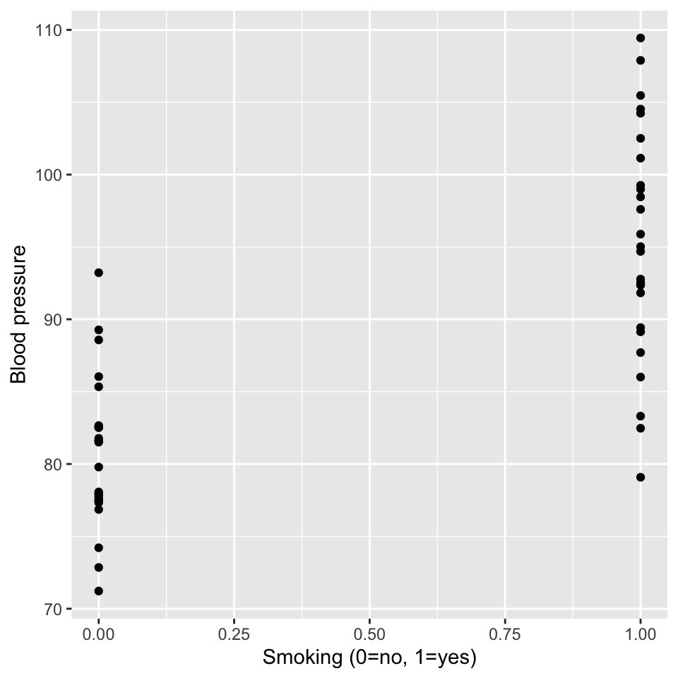
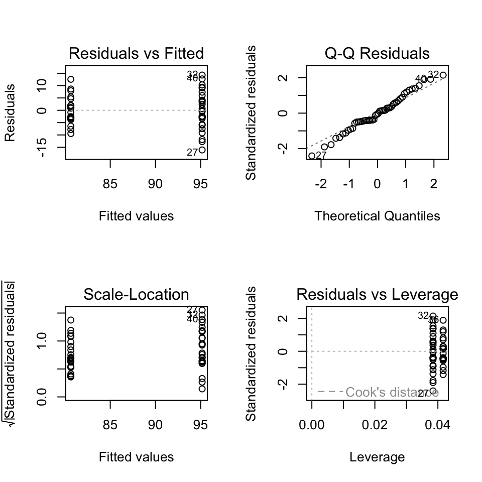
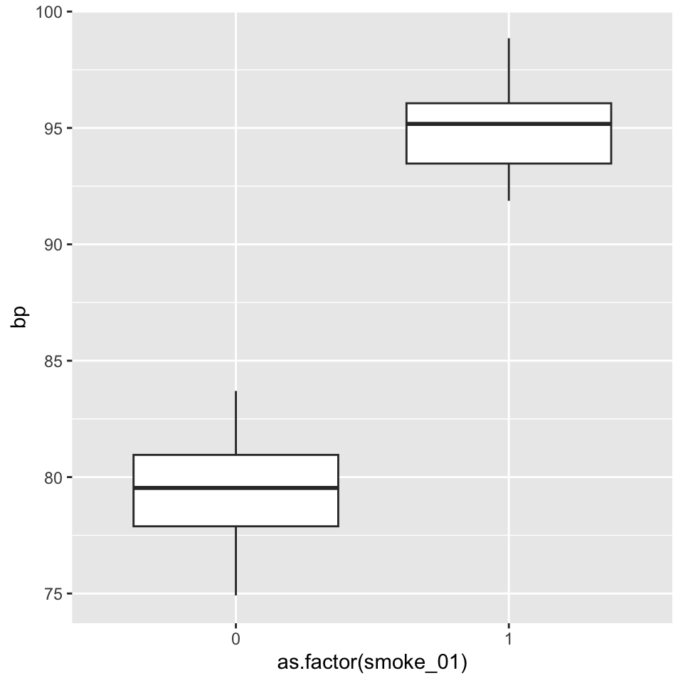
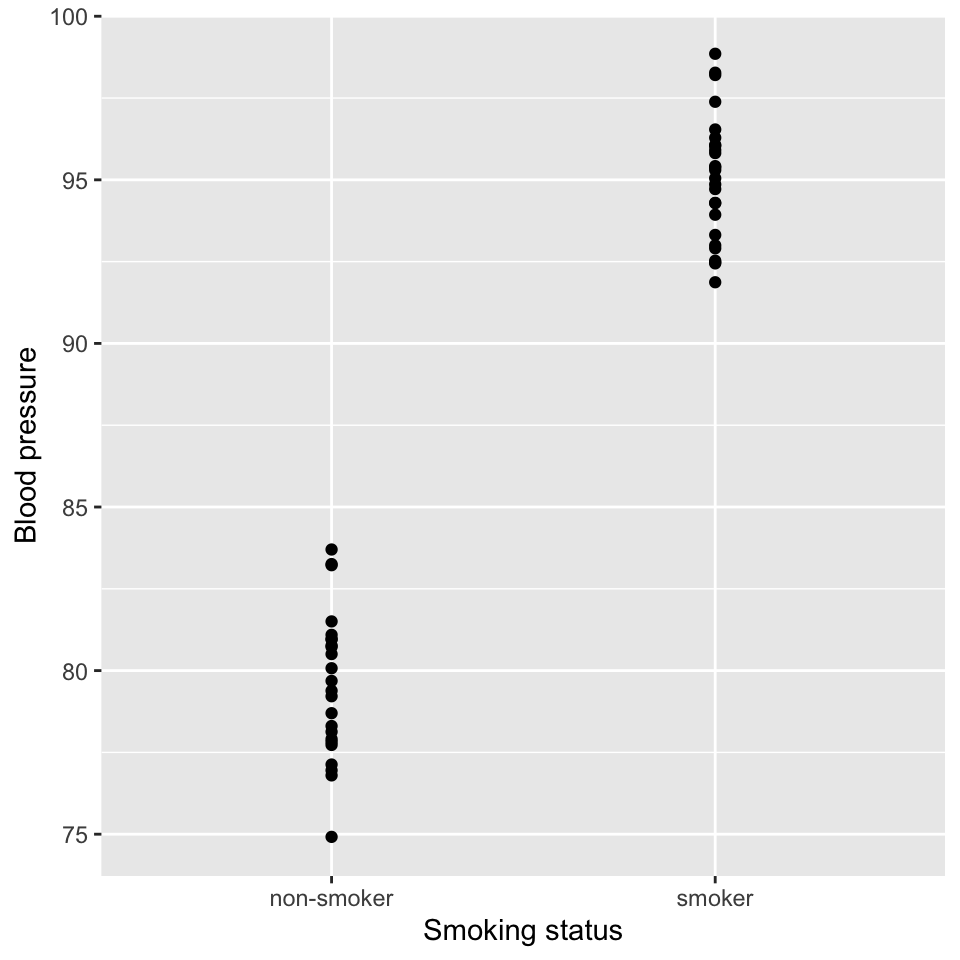
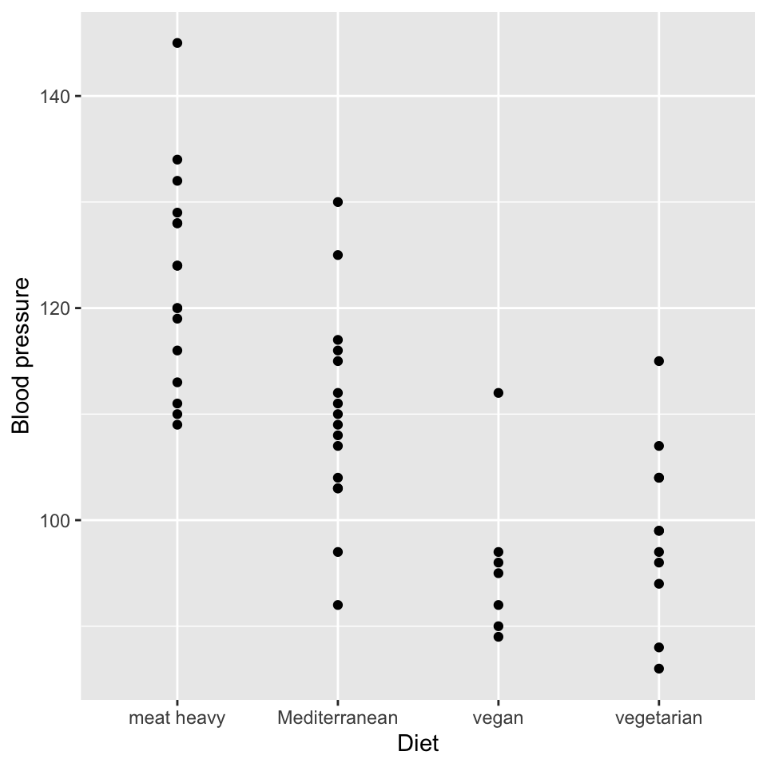
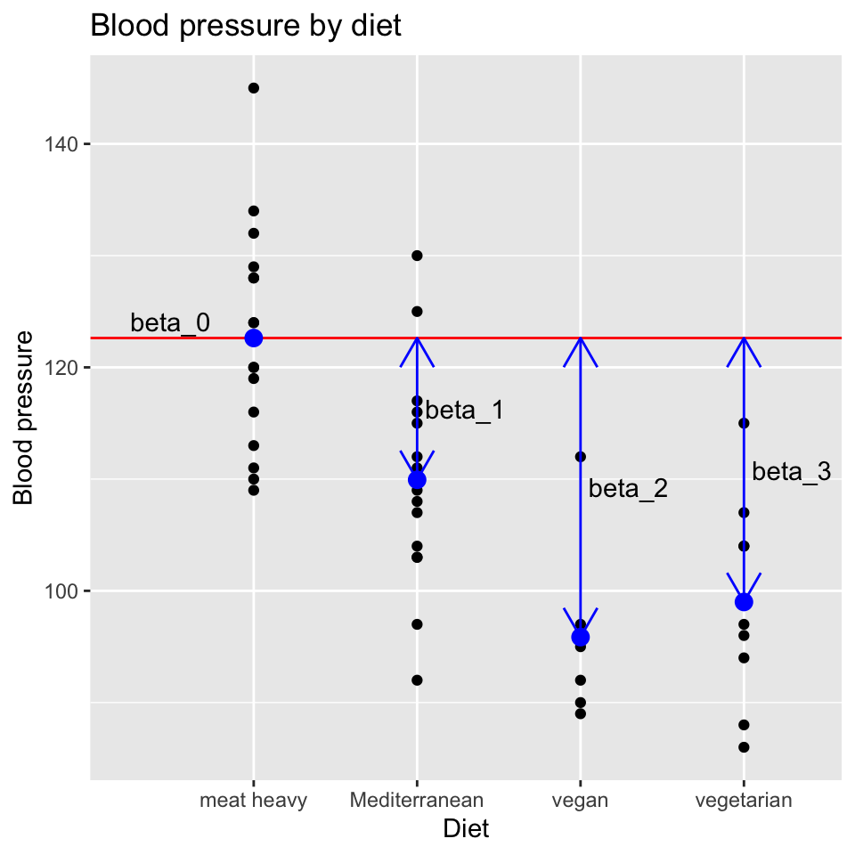
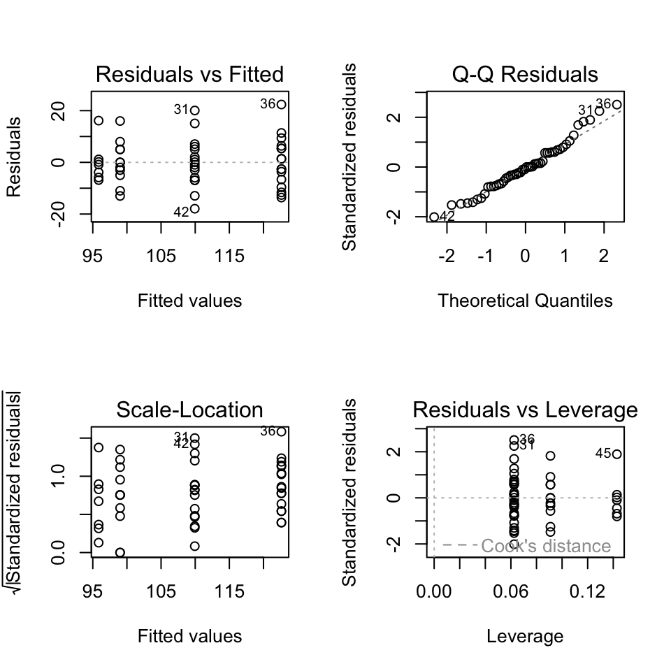

Categorical explanatory variables (L5)
This chapter contains the content of the fifth lecture of the course BIO144 Data Analysis in Biology at the University of Zurich.
Introduction
We so far only considered continuous explanatory variables. Today we will look at the following topics:
- Binary explanatory variables.
- Categorical explanatory variables.
The good news
The good news is that the mathematical model of a linear regression does not change when we include binary or categorical explanatory variables. The model is still:
\[y_i = \beta_0 + \beta_1 x^{(1)}_i + \beta_2 x^{(2)}_i + \ldots + \epsilon_i\]
This means that things like the \(R^2\), \(F\)-test, \(t\)-test, confidence intervals, etc. are still applicable. We also carry out model diagnostics mostly in the same way. So a lot of what you already learned is useful here. I suppose this is a good thing, since you don’t have to learn it again. But it also means that you have to have learned and understood it by now. If you haven’t, please reach out for assistance.
The bad news
There isn’t any.
Binary explanatory variables
Imagine the question “do people who smoke have higher blood pressure?” Though we could quantify the amount of smoking, we could also just ask if someone smokes or not. This is a binary variable. We can put that information into a variable \(x\) where values \(x_i\) can take on the values 0 or 1, where 0 denotes non-smoker and 1 denotes smoker. The linear model is then:
\[y_i = \beta_0 + \beta_1 x_i + \epsilon_i\] Huh? This is exactly the same model as when the explanatory variable \(x\) is continuous. The only difference is that \(x_i\) can only be a zero or a one. The interpretation of the \(\beta_1\) is also the same: it is the change in the response variable \(y\) when \(x\) changes by one unit. In this case, the change is from non-smoker to smoker.
Think, Pair, Share
What is the predicted value of \(y\) for a non-smoker? And for a smoker?
The \(\beta_1\) can be thought of as the effect on blood pressure of smoking. If \(\beta_1\) is positive, smoking increases blood pressure. If \(\beta_1\) is negative, smoking decreases blood pressure.
For the question of whether smoking influences blood pressure we can formulate a null and an alternative hypothesis.
- Null hypothesis: \(\beta_1 = 0\). That is, smoking has no effect on blood pressure.
- Alternative hypothesis: \(\beta_1 \neq 0\). That is, smoking has an effect on blood pressure.
Think, Pair, Share
What statistical test can we use to test the null hypothesis here?
Let’s take a graphical view of the case of a binary response variable.
Think, Pair, Share
Draw on the graph a representation of the model \(\beta_0\), \(\beta_1\), and \(\beta_0 + \beta_1\).
Here is a graph showing the mean of the two groups (non-smoker and smoker) and a vertical line for the difference between the two means:
Warning in geom_segment(aes(x = 0.5, y = group_means$mean_bp[1], xend = 0.5, : All aesthetics have length 1, but the data has 50 rows.
ℹ Please consider using `annotate()` or provide this layer with data containing
a single row.
Example: Smoking and blood pressure
Let’s do a real example. We have data on blood pressure and smoking status. We want to know if smoking has an effect on blood pressure.
To fit the linear model in R, we use the lm function as before. The only difference is that the explanatory variable is binary. But we do not need to tell this to R. It can handle things just fine. So, the code to fit the model is:
mod_smoking <- lm(bp ~ smoke_01, data = bp_data_smoking)Of course, we next look at the model diagnostic plots to see if the model assumptions are met.

The QQ-plot shows that the residuals are close enough to the normal distribution.
The other plots are a little different from before, because we have only two fitted, one for non-smokers and one for smokers. But we can still see that the residuals show no clear difference between the two groups. Also there is no leverage plot, due to all leverages being equal (all data points are equal distance from \(\hat{x}\))
Here is how it could have looked if smoking also increased the variability in the blood pressure among individuals:

It is clear that not only does smoking increase the mean blood pressure, but it also increases the inter-individuals (between individual) variability in blood pressure.

We can see in the residuals vs. fitted plot that the residuals of the non-smokers are less spread out than the residuals of the smokers. This is a sign of heteroscedasticity (difference in variance among groups).
Does smoking have an effect on blood pressure?
We address this question by testing the null hypothesis of no effect of smoking on blood pressure? This null hypothesis corresponds to \(\beta_1 = 0\). This is the same as testing if the slope of the line is different from zero, for which we use a \(t\)-test.
Here is the table of estimates and the \(t\)-test:
| Characteristic | Beta | 95% CI1 | p-value |
|---|---|---|---|
| smoke_01 | 15 | 14, 17 | <0.001 |
| 1 CI = Confidence Interval | |||
Or for more information:
Estimate Std. Error t value Pr(>|t|)
(Intercept) 79.55976 0.4224689 188.32100 1.584497e-70
smoke_01 15.48478 0.5858589 26.43089 2.942250e-30There is very clear evidence that smoking increases blood pressure. The \(p\)-value is very small.
Reporting our findings
An appropriate graph would be a scatter plot of blood pressure against smoking status, just like we made above. You may see graphs of such data that are bar graphs with error bars. This is not a good way to present the data, because it hides the individual data points and their distribution. It is better to show the individual data points. If there are very many data points, however, a box and whisker plot may be more informative.

An appropriate sentence to write about our results would be. “We found that smoking increases blood pressure by 15 units (95% CI: 14 to 17 units, \(t = 25.8\), \(p < 0.001\), \(df = 48\)).” This sentence gives the effect size, the confidence interval, and the \(t\)-test results. It is a sentence about the the effect of smoking.
Not so good would be to write: “There was a statistically significant effect of smoking on blood pressure (\(t = 25.8\), \(p < 0.001\), \(df = 48\)).” – This is not informative; it does not even give the direction of the effect. It is a sentence about statistical significance..
Generally speaking, put the focus on the effect/relationship, not on the statistical significance.
Words instead of 0/1
In the smoking explanatory variable we denoted a non-smoker with a 0 and a smoker with a 1. Could we instead have denoted a non-smoker with the word “non-smoker” and a smoker with the word “smoker”? Lets see how the lm function feels about that.
bp status
1 79.21619 non-smoker
2 83.70139 non-smoker
3 94.86015 smoker
4 93.93358 smoker
5 98.85311 smoker
6 81.50332 non-smokerThe data now has the variable that describes smoker status as a word. Here’s a graph of that data:

Very nice. Now we can fit the model:
Estimate Std. Error t value Pr(>|t|)
(Intercept) 79.55976 0.4224689 188.32100 1.584497e-70
statussmoker 15.48478 0.5858589 26.43089 2.942250e-30The numbers in this table are exactly the same as before, when we used the 0/1 coding. The lm function is pretty smart. It recodes the two levels (non-smoker and smoker) in the status variable to be a binary variable. The summary function then gives the estimates for the two levels.
We can also get the \(R^2\) value, and it has the same meaning and is calculated in the same way.
[1] 0.9357079So, a linear model with a binary explanatory variable very similiar to a linear model with a continuous explanatory variable. A difference is that the estimates are not slopes, but differences in means between the two groups.
Note
A linear model with a binary explanatory variable is the same as a two-sample \(t\)-test:
Two Sample t-test
data: bp by status
t = -26.431, df = 48, p-value < 2.2e-16
alternative hypothesis: true difference in means between group non-smoker and group smoker is not equal to 0
95 percent confidence interval:
-16.66272 -14.30683
sample estimates:
mean in group non-smoker mean in group smoker
79.55976 95.04454 The value of \(t\)-statistic is the same as exactly the value of the \(t\)-statistic in the linear output. It is exactly the same test.
Note
You may hear the term “binary regression” or “logistic regression” in the future. This is a different type of regression model that is used when the response variable is binary. The model we are talking about here is called “linear regression with binary explanatory variables”.
Note
In all that went above, we assumed that observations were independent. I.e., we assumed there were 50 truly independent observation. This is a very strong assumption. In reality, we might have made more than one measure of blood pressure from one individual. This is called “clustering” or “repeated measures”. A consequence would be that we not then have 50 truly independent observation, we would have fewer than 50, and so we would have fewer than 48 degrees of freedom for error. We will talk about this again later in the course.
Categorical explanatory variables
Image we have a new question: “Is a person’s blood pressure related to their diet?” We have data on the diet of 50 people and we have coded their diets as: “meat heavy”, “Mediterranean”, “vegetarian”, and “vegan”.
Here is an example dataset:
# A tibble: 6 × 3
diet bp person_ID
<chr> <dbl> <chr>
1 meat heavy 120 person_1
2 vegan 89 person_2
3 vegetarian 86 person_3
4 meat heavy 116 person_4
5 Mediterranean 115 person_5
6 meat heavy 134 person_6 And here’s a graph of the dataset:

We can see quite a lot from this, for example that the “meat heavy” diet is associated with higher blood pressure.
But how can a linear model be used with such an explanatory variable?
Dummy variables
The trick is to convert the categorical variable into a set of binary variables. For a categorical variable with \(k\) levels, we create \(k - 1\) binary variables \(x_i^{(j)}\).
We already did this with the smoking status variable. It contained two levels, “non-smoker” and “smoker”. We created a binary variable \(x_i^{(1)}\) that was 1 if the \(i\)-th person was a smoker and 0 if they were a non-smoker. That is, the categorical variable smoking status had \(k = 2\) levels which were recoded into \(k - 1 = 1\) binary variables.
For the diet variable, we have \(k = 4\) levels. So we should create \(k - 1 = 3\) binary variables. We create one less than the number of levels because the last level is the “baseline” level. The baseline level is the level that the other levels are compared to. In this case, the baseline level is “meat heavy”. The other levels are compared to “meat heavy”.
Another way to think about why we need one less binary variable than the number of levels is that when meat_heavy = 0 & Mediterranean = 0 & vegetarian = 0, we there is no other possibility than the person has a vegan diet. We infer the vegan diet from a process of elimination of the other possibilities. This is why we only need three binary variables, and more generally only need \(k - 1\) binary variables for a categorical variable with \(k\) levels.
Here is the dataset with four binary variables:
# A tibble: 6 × 7
diet bp person_ID meat_heavy Mediterranean vegetarian vegan
<chr> <dbl> <chr> <dbl> <dbl> <dbl> <dbl>
1 meat heavy 120 person_1 1 0 0 0
2 vegan 89 person_2 0 0 0 1
3 vegetarian 86 person_3 0 0 1 0
4 meat heavy 116 person_4 1 0 0 0
5 Mediterranean 115 person_5 0 1 0 0
6 meat heavy 134 person_6 1 0 0 0And here it is with three:
# A tibble: 6 × 6
diet bp person_ID Mediterranean vegetarian vegan
<chr> <dbl> <chr> <dbl> <dbl> <dbl>
1 meat heavy 120 person_1 0 0 0
2 vegan 89 person_2 0 0 1
3 vegetarian 86 person_3 0 1 0
4 meat heavy 116 person_4 0 0 0
5 Mediterranean 115 person_5 1 0 0
6 meat heavy 134 person_6 0 0 0The point is that the second table with one less binary variable has exactly the same information as the first table with four binary variables. It has the same information because we know that there are only four possible diets in the dataset.
Now we can use the following linear model, which has three binary explanatory variables:
\[y_i = \beta_0 + \beta_1 x_i^{(1)} + \beta_2 x_i^{(2)} + \beta_3 x_i^{(3)} + \epsilon_i\]
where \(x_i^{(1)}\) is the binary variable for the Mediterranean diet, \(x_i^{(2)}\) is the binary variable for the vegetarian diet, and \(x_i^{(3)}\) is the binary variable for the vegan diet.
Think, Pair, Share
Question: What is the interpretation of \(\beta_0\) in this model?
Answer: It is the intercept of the model, and it is the expected value of the response variable when all the explanatory variables are zero. In this case, it is the expected blood pressure of a person on a meat heavy diet because the meat heavy diet is the baseline diet.
Mathematically, \(\hat{y} = \beta_0\) when \(x_i^{(1)} = x_i^{(2)} = x_i^{(3)} = 0\). This is the case when the person is on a meat heavy diet, because \(x_i^{(1)} = 0\) means not on a Mediterranean diet, \(x_i^{(2)} = 0\) means not on a vegetarian diet, and \(x_i^{(3)} = 0\) means not on a vegan diet.
Think, Pair, Share
What is the interpretation of \(\beta_1\) in this model?
Answer: Recall the meaning of the \(\beta_j\) coefficients in the model of smoking effects on blood pressure. It was the expected difference in blood pressure between a smoker and a non-smoker. In this model, \(\beta_1\) is the expected difference in blood pressure between a person on a Mediterranean diet and a person on a meat heavy diet.
Question: What is the interpretation of \(\beta_2\) in this model?
Answer: \(\beta_2\) is the expected difference in blood pressure between a person on a vegetarian diet and a person on a meat heavy diet.
Question: What is the interpretation of \(\beta_3\) in this model? Answer: \(\beta_3\) is the expected difference in blood pressure between a person on a vegan diet and a person on a meat heavy diet.
So, each of the three coefficients \(\beta_1\), \(\beta_2\), and \(\beta_3\) is the expected difference in blood pressure between a person on a particular diet and a person on the meat heavy diet. Meat heavy is the reference / intercept diet.
In a visualisation
Here is a visualisation of the model:
`summarise()` has grouped output by 'diet'. You can override using the
`.groups` argument.
Degrees of freedom of a categorical variable
When we fit a single categorical variable to the data we are fitting a model with \(k\) levels. However, the degrees of freedom of a categorical variable with \(k\) levels is \(k-1\). This is because one degree of freedom corresponds to the intercept, and the remaining \(k-1\) degrees of freedom correspond to the \(k-1\) coefficients of the \(k-1\) dummy variables.
So, generally speaking, the degrees of freedom used up a categorical variable with \(k\) levels is \(k-1\).
Doing it in R
In R, we can fit a linear model with a categorical variable using the lm() function. And we don’t need to make the dummy binary variables. That is all very conveniently done in the inner workings of the lm() function. Here we go:
bp_model_diet <- lm(bp ~ diet, data = bp_data_diet)No news is good news!
Check the diagnostic plots to assess if the model assumptions are met.

No patterns in the residuals, QQ-plot data close to the line, and the residuals are homoscedastic. No evidence of outliers. The model assumptions are met.
Let’s look at the estimates of the coefficients and their \(t\)-statistics and \(p\)-values.
Estimate Std. Error t value Pr(>|t|)
(Intercept) 122.62500 2.302393 53.259813 5.494274e-43
dietMediterranean -12.68750 3.256075 -3.896563 3.144677e-04
dietvegan -26.76786 4.173441 -6.413858 6.922791e-08
dietvegetarian -23.62500 3.607156 -6.549481 4.328870e-08
Think, Pair, Share
What can we conclude from the values of the three \(\beta\) coefficients?
The three non-intercept coefficients are the \(\beta_1\), \(\beta_2\), and \(\beta_3\) coefficients. The value of each is negative, which means that the blood pressure is lower on the Mediterranean, vegetarian, and vegan diets compared to the meat heavy diet.
The \(t\)-statistics and \(p\)-values are also given. The \(p\)-values are all less than 0.05, so we can reject the null hypothesis that the coefficients are zero. This means that the blood pressure is significantly lower on the Mediterranean, vegetarian, and vegan diets compared to the meat heavy diet.
Just for fun, let’s fit the model using the three binary dummy variables:
bp_model_diet_bin <- lm(bp ~ Mediterranean + vegetarian + vegan, data = bp_data_diet)
summary(bp_model_diet_bin)$coefficients Estimate Std. Error t value Pr(>|t|)
(Intercept) 122.62500 2.302393 53.259813 5.494274e-43
Mediterranean -12.68750 3.256075 -3.896563 3.144677e-04
vegetarian -23.62500 3.607156 -6.549481 4.328870e-08
vegan -26.76786 4.173441 -6.413858 6.922791e-08Exactly the same :)
And for even more fun, lets see what happens if we fit a model with four binary variables, one for each diet.
bp_data_diet_bin <- bp_data_diet %>%
select(bp, meat_heavy, Mediterranean, vegetarian, vegan)
bp_model_diet_bin_all <- lm(bp ~ - Mediterranean + vegetarian + vegan + meat_heavy,
data = bp_data_diet_bin)
summary(bp_model_diet_bin_all)$coefficients Estimate Std. Error t value Pr(>|t|)
(Intercept) 109.93750 2.302393 47.749241 7.652542e-41
vegetarian -10.93750 3.607156 -3.032167 3.980698e-03
vegan -14.08036 4.173441 -3.373800 1.513076e-03
meat_heavy 12.68750 3.256075 3.896563 3.144677e-04The lm function has dropped the meat_heavy variable because it is perfectly collinear with the other three variables. This is because the sum of the four binary variables is always 1. This is called the dummy variable trap. The lm function is smart enough to drop one of the variables to avoid the trap.
Is diet important for blood pressure?
When we want to answer the question “is diet important for blood pressure” we likely want to understand if there are any differences between diets. This is very similar to when we asked in multiple regression if any of the slopes are different from zero. Recall that then we used an \(F\)-test. We can do the same here.
The null hypothesis is that all the coefficients are zero, which means that the diet has no effect on blood pressure. The alternative hypothesis is that at least one of the coefficients is different from zero, which means that at least one diet has an effect on blood pressure.
Another way to express the null hypothesis is that diet does not explain a significant amount of the variance in blood pressure. The alternative hypothesis is that diet explains a significant amount of the variance in blood pressure.
Variance explained by diet is quantified by the sum of squares associated with the diet variable. This is the model sum of squares, SSM.
As before, the \(F\)-statistic is the ratio the mean square of the model to the mean square of the residuals:
\[F = \frac{MSE_{model}}{MSE_{residual}} = \frac{SSM/(k-1)}{SSE/(n -1 - (k -1))}\]
where \(k\) is the number of levels of the categorical variable and \(n\) is the number of observations.
Note
\((n - 1)\) is the total number of degrees of freedom in the model. \((k - 1)\) is the number of degrees of freedom used up by the categorical variable. \((n - 1 - (k - 1))\) is the number of degrees of freedom left over for the residuals. This simplifies to \(n - k\).
The \(F\)-statistic is compared to the \(F\)-distribution with \(k-1\) and \((n -1 - (k -1)) = n-k\)) degrees of freedom.
Let’s do the \(F\)-test for the diet variable:
Analysis of Variance Table
Response: bp
Df Sum Sq Mean Sq F value Pr(>F)
diet 3 5274.2 1758.08 20.728 1.214e-08 ***
Residuals 46 3901.5 84.82
---
Signif. codes: 0 '***' 0.001 '**' 0.01 '*' 0.05 '.' 0.1 ' ' 1The \(p\)-value is less than 0.05, so we can reject the null hypothesis that diet has no effect on blood pressure.
Think, Pair, Share
Calculate the \(R^2\) for the model from the ANOVA table.
Tip
Let’s use the lovely gtsummary package to summarize the model.
| Term | DF | Sum of Squares | Mean Square | F Statistic | P Value |
|---|---|---|---|---|---|
| diet | 3 | 5274.235 | 1758.078 | 20.728 | 0 |
| Residuals | 46 | 3901.545 | 84.816 | NA | NA |
Additional reading
If you’d like to read another perspective please feel free to take a look at Chapters 3.2u-x, 3.3, 4.1-4.5 in Lineare Regression.